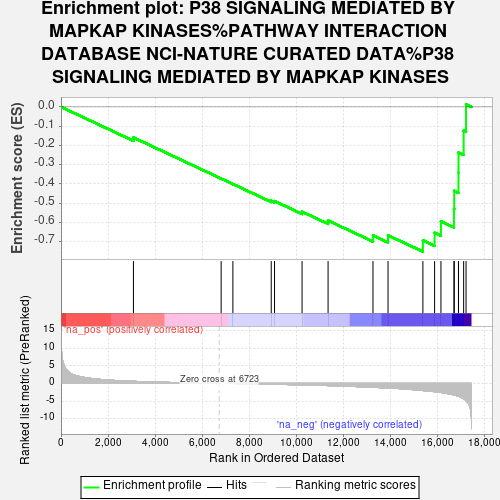
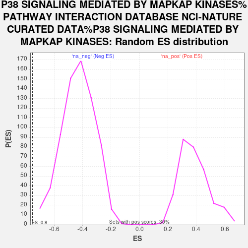

| Dataset | gene_ranks |
| Phenotype | NoPhenotypeAvailable |
| Upregulated in class | na_neg |
| GeneSet | P38 SIGNALING MEDIATED BY MAPKAP KINASES%PATHWAY INTERACTION DATABASE NCI-NATURE CURATED DATA%P38 SIGNALING MEDIATED BY MAPKAP KINASES |
| Enrichment Score (ES) | -0.75289136 |
| Normalized Enrichment Score (NES) | -1.752518 |
| Nominal p-value | 0.0 |
| FDR q-value | 0.32751906 |
| FWER p-Value | 0.845 |

| SYMBOL | RANK IN GENE LIST | RANK METRIC SCORE | RUNNING ES | CORE ENRICHMENT | |
|---|---|---|---|---|---|
| 1 | CREB1 | 3081 | 0.597 | -0.1592 | No |
| 2 | ETV1 | 6812 | 0.000 | -0.3730 | No |
| 3 | MAPK11 | 7312 | -0.015 | -0.4012 | No |
| 4 | YWHAB | 8943 | -0.208 | -0.4885 | No |
| 5 | YWHAQ | 9083 | -0.228 | -0.4898 | No |
| 6 | YWHAZ | 10254 | -0.403 | -0.5451 | No |
| 7 | MAPK14 | 11361 | -0.597 | -0.5911 | No |
| 8 | YWHAE | 13271 | -1.090 | -0.6687 | No |
| 9 | YWHAG | 13911 | -1.278 | -0.6679 | No |
| 10 | SRF | 15394 | -2.009 | -0.6942 | Yes |
| 11 | YWHAH | 15893 | -2.330 | -0.6546 | Yes |
| 12 | MAPKAPK2 | 16162 | -2.557 | -0.5952 | Yes |
| 13 | TSC2 | 16716 | -3.255 | -0.5318 | Yes |
| 14 | RAF1 | 16728 | -3.271 | -0.4368 | Yes |
| 15 | MAPKAPK3 | 16908 | -3.592 | -0.3421 | Yes |
| 16 | HSPB1 | 16910 | -3.598 | -0.2370 | Yes |
| 17 | CDC25B | 17128 | -4.298 | -0.1238 | Yes |
| 18 | TCF3 | 17230 | -4.886 | 0.0132 | Yes |
